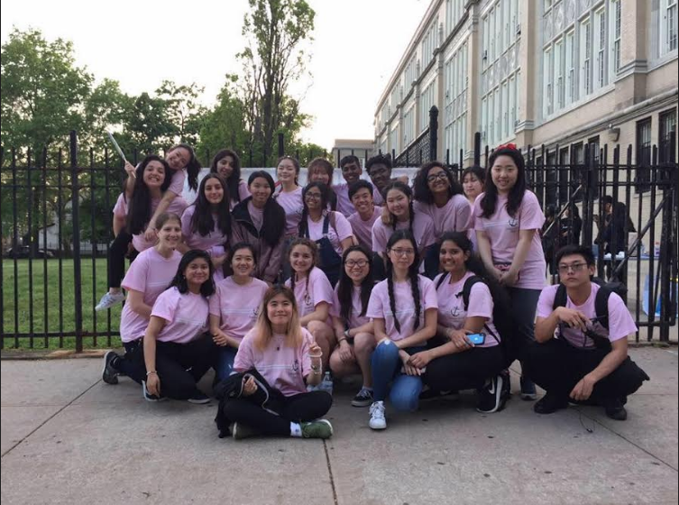
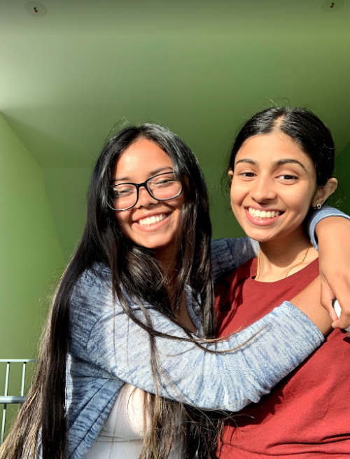
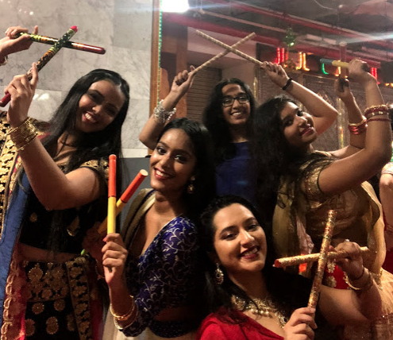
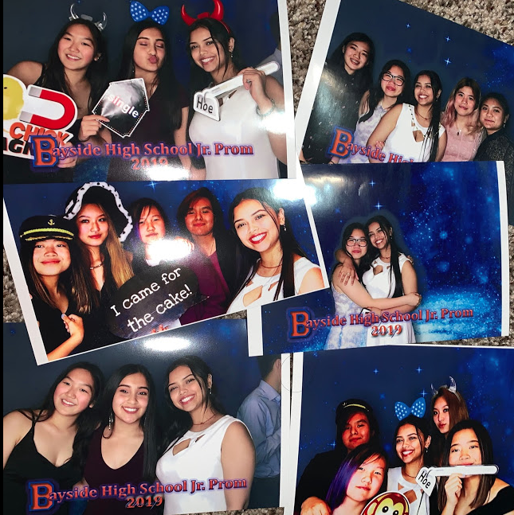
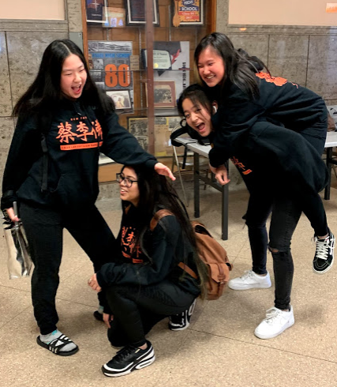
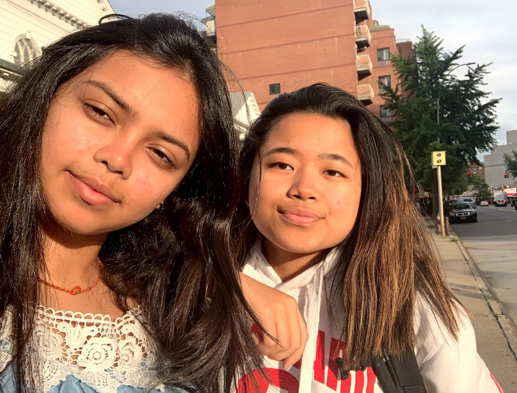

Hey you're cute! I LOVE YOOOOOU ;) (follow me @darshi.x or add me on snap: darshi_1214)
inside the very messy lifestyle of meee :)
School
I am a rising senior at Bayside High School, who is in the Engineering CTE program. During my sophomore year, I applied to be in the Leadership class (which was probably my best decision made in high school). Through the class, I gained confidence, helped create school-wide events, made many friendships, and learn new things everyday. I joined programs/clubs like BSAC (Borough Schools Advisory Council), Student Council, Smiles for Miles, Yearbook, and Key Club. In the fall of 2019, I will be interning at JMV Architect.

Personal
I enjoy watching Netflix and sleeping, both activities keep me at peace and engaged. During 8th grade, my friend forced me into kpop and I enjoyed learning about the culture. From there, I watched kdramas and learned how to read Korean (which is pretty easy). In addition I enjoy reading fantasy books sometimes. I have this summer tradtition where I read the Embrace Series. This is mostly because that was the book that got me interested in reading, and I forget details easily. I love rereading or rewatching things because of my really bad memories. I had a huge One Direction phase LMFAO! I don't have a favorite genre, I like all types of music, movies, drama, PMO SOME NEW ONES! :D
Life
below is a picture of me and my friend Hana. The sun is shining as I put my arms around Hana and we both smile into the camera.

below is a picture of me and my four cousins dressed in indian clothing. We are all holding up sticks making an "X".

below is a collage of pictures taken at a photobooth at my school's junior prom. I posed with various props such as mouse ears.

below my friends and I wear matching black hoodies and black pants. Judy is giving a piggy back ride to Megan while I am posing on the floor along side Emily.

below my friend Quisha and I take a selfie during golden hour. We're both smiling but without glasses or teeth.

below is a picture of Henry and Judy shying away from the camera. Me and jasleen hold up our feet. This picture is taken on the 7 train.